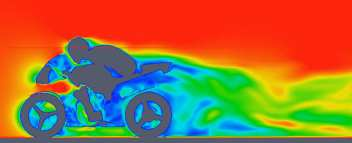

MotorBike Case
This case uses OpenFOAM to calculate the steady flow around a motorbike and rider using RAS turbulence modelling with wall functions. The initialization of flow velocity is to 20 m/s. The box includes the bike and ride are approximately 2.0x0.8x1.3m and the estimated characteristic length scale L=0.5m, see the Figure below.
As you will see, this is a more advanced case than the cavity, involving snappyHexMesh to generate the mesh, RANS modelling, and using several function objects. The idea is to further strengthen the familiarity with OpenFOAM input and have a more fun case to play around with than the cavity.
Notice that OpenFOAM cases are not backward compatible, please always copy cases from $FOAM_TUTORIALS of current version
$ module add openfoam/1912
$ echo $FOAM_BASHRC
/pdc/vol/openfoam/v1912/OpenFOAM-v1912/etc/bashrc
$ source $FOAM_BASHRC
$ cp -r $FOAM_TUTORIALS/incompressible/simpleFoam/motorBike .
The structure of the case is shown in the following
$ cd motorBike
$ ls
0.orig Allclean Allrun constant system
$ tree -d 1 .
├── 0.orig (time directory starting with T=0, initial conditions)
│ ├── include
│ │ ├── fixedInlet
│ │ ├── frontBackUpperPatches
│ │ └── initialConditions
│ ├── k (turbulence kenetic energy)
│ ├── nut (turbulence viscosity)
│ ├── omega (turbulence specific dissipation rate)
│ ├── p (pressure)
│ └── U (flow velocity)
├── Allclean (precanned clean file)
├── Allrun (precanned run file)
├── constant (hard static stuff i.e. physical properties)
|-- RASProperties (Reynolds-Averaged Simulation Model to use e.g. kOmegaSST)
│ ├── polyMesh
│ │ ├── blockMeshDict
│ │ ├── boundary
│ ├── transportProperties (Transport Model e.g. Newtonian)
│ ├── triSurface
│ │ ├── motorBike.obj.gz (actual motorbike model)
│ └── turbulenceProperties
└── system
├── blockMeshDict
├── controlDict (the main dictionary for controlling the simulation)
├── decomposeParDict (dictionary for partitioning up the space into smaller chunks)
├── fvSchemes
├── fvSolution
├── snappyHexMeshDict (the dictionary for adding a mesh for simulating surface interactions)
The default setting is to run the application simpleFoam on 6 MPI-rank with background mesh block of size (20×8×8). The results are stored in 5 time steps 100, 200, 300, 400 and 500.
The following tasks are suggested during the hands-on session.
Try to change some parameters in the snappyHexMeshDict, can you see what happens?
Try to figure out what each fucntion object does. Search for documentation in the user guide. If you are brave, look at the source code, that is the big plus of open-source!
Think about what you typically look at in your CFD simulations. See if you can find a suitable function object. (Suggestions: inlet-outlet mass flow balance, y+ values, Co-number, velocity min/max, residuals, etc.)
Run the case by default
$ source $FOAM_BASHRC
$ ./Allrun # run the workflow
The script Allrun is a script to collect all commands for whole workflow. You can use it, but it is not very pedagogical. Better to manually go through each command to remember what it does.
# Copy motorbike surface from resources directory
cp $FOAM_TUTORIALS/resources/geometry/motorBike.obj.gz constant/triSurface/
# Restore the 0 directory
cp -r 0.orig 0
# Extracts and writes surface features to file
surfaceFeatureExtract
# Create a block mesh, which will be the background mesh for snappy
blockMesh
# Decompose a mesh for parallelization
decomposePar -copyZero
# Run the snappyHexMesh in parallel!
mpirun -np 6 snappyHexMesh -parallel -overwrite > log.snappyHexMesh
# Run a potential flow solver
mpirun -np 6 potentialFoam -parallel -writephi > log.potentialFoam
# Run the steady-state solver for incompressible flow
mpirun -np 6 simpleFoam -parallel > log.simpleFoam
# Reconstruct the mesh using geometric information
reconstructParMesh -constant
# Reconstruct fields of the parallel case
reconstructPar -latestTime
Some stuff worth noting here:
We want to generate the mesh in parallel and this introduces some extra shenanigans into the workflow. This is not really needed for this case, but can be good to know.
We generate the background mesh with blockMesh and then decompose that into subdomains with decomposePar. Here, we have to provide the -copyZero flag, so that the 0 folder is simply copied to the processor directories without change. Otherwise, some stuff will be “optimized away”, for example entries for boundaries that are not found in the mesh. Since the background mesh generate by blockMesh does not contain the motorbike, this would completely ruin the 0 folder.
We run potentialFoam to solve potential flow equations to get a better initial condition. Note a corresponding entry in system/fvSolution.
After running the case we need to reconstruct not only the data but also the mesh, which was generated in parallel. For that, we use reconstructParMesh. The -constant flag makes it put the mesh directly into constant/polyMesh.
>>>>>>> 43626f76ddfad1862f79bbc9a72c0ba77f587f07
Validating the model
To make sure everything is OK we can the output logs from the OpenFOAM run, this will show if the run actually worked or not. For each stage there is a log.[stage] output. For example, in the log.simpleFoam file the coefficients should be likes
$ tail -n 50 ./log.simpleFoam
...
Time = 500
...
ExecutionTime = 279.99 s ClockTime = 281 s
...
Coefficients
Cm : 0.157483 (pressure: 0.149969 viscous: 0.00751474)
Cd : 0.410867 (pressure: 0.393321 viscous: 0.0175461)
Cl : 0.0751623 (pressure: 0.0758905 viscous: -0.000728213)
Cl(f) : 0.195065
Cl(r) : -0.119902
ensightWrite ensightWrite write: ( U p k omega )
End
Finalising parallel run
Here you can see that function objects add new stuff to the log!
Parallelization
we can change the MPI rank and the decomposition method in file system/decomposeParDict, for example, change the default
numberOfSubdomains 6;
method hierarchical;
to
numberOfSubdomains 24; // MPI-rank
method scotch; // using scotch for partition
(Note: If you still used method hierarchical, the hierarchicalCoeffs in the file should be coordinately changed)
hierarchicalCoeffs
{
n (4 3 2); // 4x3x2 = 24 !!
}
The script Allclean can be used to delete the log files and remove the results from motorBike run and then rerun again.
Mesh refinement
For scalability tests, the default mesh of 350 k cells may be small, (you can check the mesh information in log.snappyHexMesh
Layer mesh : cells:353548 faces:1107696 points:405989
We need to increase the block mesh size and change the settings in file system/blockMeshDict, for example, from
blocks
(
hex (0 1 2 3 4 5 6 7) (20 8 8) simpleGrading (1 1 1)
);
to
blocks
(
hex (0 1 2 3 4 5 6 7) (40 16 16) simpleGrading (1 1 1)
);
i.e. the mesh size in x, y, and z-directory increases twice. The script Allclean can be used to delete the log files and remove the results from motorBike run and then rerun again.
(Notice: Please do not refine the mesh too much. Otherwise execution time becomes very long)
$ ./Allclean
$ ./Allrun
The total number of cells is around 1.8 M (check it the log.snappyHexMesh)
Layer mesh : cells:1892612 faces:5875533 points:2112502
snappyHexMesh
The mesher performs three steps to create the mesh from the background mesh and the stl surface of the motorbike.
$ less system/snappyHexMeshDict
// Which of the steps to run
castellatedMesh true;
snap true;
addLayers true;
Try running snappyHexMesh without the -overwrite flag and take a look at the three produced meshes in the consecutive time directories written. Can you see the difference from step to step? Note that addLayers can be removed, and the produced mesh will still conform to the geometry.
There are many settings in can be modified to refine and improve the mesh quality. For example,
$ less system/snappyHexMeshDict
...
// Geometry refinement for wak region
geometry
{
refinementBox
{
type box;
min (-1.0 -0.7 0.0);
max ( 8.0 0.7 2.5);
}
}
...
// Region refinement used in Castellated mesh generation.
refinementRegions
{
refinementBox
{
mode inside;
levels ((1E15 4));
}
}
...
refines the mesh in a predifined box. Try changing the parameters of the box and look at the effect. You also try creating a new geometric primitve and refining it. As usual, to see what is there set type to banana, let the mesher crash and write out available valid options.
Function objects
The motorbike case contains several function objects distributed among respective files in system. Take a look at them, try to understand what they do. Consult the User guide on openfoam.com.
...
$ less system/controlDict
functions
{
#include "streamLines"
#include "wallBoundedStreamLines"
#include "cuttingPlane"
#include "forceCoeffs"
#include "ensightWrite"
}
$ ls system
blockMeshDict decomposeParDict.6 fvSolution surfaceFeatureExtractDict
controlDict ensightWrite meshQualityDict wallBoundedStreamLines
cuttingPlane forceCoeffs snappyHexMeshDict
decomposeParDict fvSchemes streamLines
Inspect the output form each of the objects. Open the streamlines in Paraview. The Ensight output can also be opened in paraview directly, as well as the cut-plane. For the forces, check out the .dat file in postProcessing.
Now, think of what else would be good to add to the simulation. For example, writing down the residuals to a file. Can you find a corresponding function object in the User guide? Try to add it to the case!
Numerical schemes and solvers
The numerical schemes are setting in the system/fvSchemes.
...
ddtSchemes // for time derivatives term
gradSchemes // for divergence/convection term
divSchemes // for gradient term
laplacianSchemes // for Laplacian term
...
The solvers are selected in the system/fvSolution
...
p // GAMG is recommended for pressure
{
solver GAMG;
smoother GaussSeidel;
...
U // for velocities
{
solver smoothSolver;
smoother GaussSeidel;
...
More details about the OpenFOAM schemes and solvers can be found at OpenFOAM: User Guide Feel free to horse around with the settings even if it kills the solver. Use the banana trick to see what solvers are available e.g. for pressure and try to change to a different solver? Is the case running faster or slower? You can always look at the execution time in the log file.
Post-processing
As already mentioned multiple times, Paraview can be used to inspect the case: mesh, flow variable, function object output. The motorbike case is great for a fancy visualization, so if you have the time and desire, try to produce something interesting! It is easiest to work with Paraview on your own machine, but you can also use Tegner.
$ module add paraview
$ paraFoam